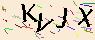

<!DOCTYPE html>
<html>
	<head>
		<meta charset="utf-8">
		<title></title>
	</head>
	<body>
	</body>
</html>
<!DOCTYPE html>
<html lang="en">
	<head>
		<meta charset="UTF-8">
		<title>Document</title>
		<!--截屏-->
		<script type="text/javascript" src="https://cdnjs.cloudflare.com/ajax/libs/jquery/2.1.0/jquery.js"></script>
		<script src="https://cdn.bootcdn.net/ajax/libs/html2canvas/1.4.1/html2canvas.js"></script>
		<script type="text/javascript" src="https://cdnjs.cloudflare.com/ajax/libs/jQuery.print/1.6.2/jQuery.print.min.js"></script>
		<script type="text/javascript" src="https://cdnjs.cloudflare.com/ajax/libs/jcanvas/21.0.1/min/jcanvas.min.js"></script>


	</head>
	<body>
		<!-- 用于演示的被截屏区域div，样式用的内联样式可以在js文件中通过.style来访问 -->
		<div id="filmStage"
			style="width: 300px; height: 300px; border-color:blue;border-style:solid; border-width:1;left: 0px;top: 0px;">
			
		</div>
		<!-- 用于点击打印或截屏的button -->
		<button class="print">保存</button>
		<!-- 用于选取截屏区域的canvas -->
		<canvas id="bg_canvas" width="100%" height="100%" />
	</body>
</html>

<script>
    //初始化绑定按钮事件
window.onload = function() {
	console.log("初始化");
	//未使用时hide，点击按钮后show
	$("#bg_canvas").hide();
	$(".print").click(function(){
	    $("#bg_canvas").show()
	    //调用选取截屏，filmstage是被打印部分div的id
		var filmstage = document.getElementById("filmStage");
	    clipScreenshots("bg_canvas",  parseInt(filmstage.style.left), parseInt(filmstage.style
				.top), parseInt(filmstage.style.width), parseInt(filmstage.style
				.height));
	});
	
	
}

/**
 * 选取划线的canvasExt
 * @type {{drawRect: canvasExt.drawRect}}
 */
var canvasExt = {
	/**
	 *  
	 * @param {string} canvasId 所要截屏的canvas
	 * @param {int} capture_xy 截屏相对于canvas的起点
	 * @param {int} capture_widthheight 截屏宽高
	 */
	drawRect: function(canvasId, capture_x, capture_y, capture_width, capture_height) {

		// 把body转成canvas
		html2canvas(document.body, {
			scale: 1,
			// allowTaint: true,
			useCORS: true //跨域使用
		}).then(canvas => {

			var filmstage = document.getElementById("filmStage");
			printClip(canvas, capture_x, capture_y, capture_width, capture_height);
		});
		// 隐藏canvas
		$("#" + canvasId).hide()


	}
};

/**
 *  
 * @param {string} canvasId 所要截屏的canvas
 * @param {int} capture_xy 截屏相对于canvas的起点
 * @param {int} capture_widthheight 截屏宽高
 */
function clipScreenshots(canvasId, capture_x, capture_y, capture_width, capture_height) {
	canvasExt.drawRect(canvasId, capture_x, capture_y, capture_width, capture_height);
}

/**
 * 打印截取区域
 * @param canvas 截取的canvas
 * @param capture_x 截取的起点x
 * @param capture_y 截取的起点y
 * @param capture_width 截取的起点宽
 * @param capture_height 截取的起点高
 */
function printClip(canvas, capture_x, capture_y, capture_width, capture_height) {
	// 创建一个用于截取的canvas
	var clipCanvas = document.createElement('canvas')
	clipCanvas.width = capture_width
	clipCanvas.height = capture_height
	// 截取
	clipCanvas.getContext('2d').drawImage(canvas, capture_x, capture_y, capture_width, capture_height, 0, 0,
		capture_width, capture_height)
	var clipImgBase64 = clipCanvas.toDataURL()
	// 生成图片
	var clipImg = new Image()
	clipImg.src = clipImgBase64
	var con = confirm('打印截图吗?取消则保存截图')
	if (con) {
		$(clipImg).print()
	} else {
		downloadIamge(clipImgBase64)
	}
}

/**
 * 下载保存图片
 * @param imgUrl 图片地址
 */
function downloadIamge(imgUrl) {
	// 图片保存有很多方式，这里使用了一种投机的简单方法。
	// 生成一个a元素
	var a = document.createElement('a')
	// 创建一个单击事件
	var event = new MouseEvent('click')
	// 生成文件名称
	var timestamp = new Date().getTime();
	var name = imgUrl.substring(22, 30) + timestamp + '.png';
	a.download = name
	// 将生成的URL设置为a.href属性
	a.href = imgUrl;
	// 触发a的单击事件 开始下载
	a.dispatchEvent(event);
}


</script>